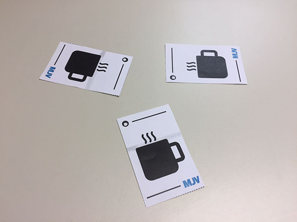

Renato Braga de Andrade
Design can change the way we see the world.
Seguro Auto - Safety for drivers
Intro
Seguro Auto is a claim information application for auto insurance users. The application demonstrates through a map points of where accidents can occur more frequently and enables users to find safer routes to make their necessary commute. Using the insurance company own database, in addition to feedback from registered users, Seguro Auto can be the solution for reducing claims and losses for insurers. The App was created using Design Thinking (DT) and Agile Methodology to develop a solution focused on the user. The DT Process was applied in three phases, Empathize, Ideation and Prototyping / Tests. The Agile methodology was used with debriefing, daily meetings with the team and in addition to presentations to MJV at the end of each sprint, with a great Final presentation. Seguro Auto was chosen as the winning project for application in the MJV portfolio.
Problem, Objectives and Methodology
Auto claims are a big problem in the city of Rio de Janeiro. Among thefts, accidents and other incidents, it is estimated that the vast majority of these could not occur with the use of information and/or more attention from the drivers. To initiate the projects, debriefing was carried out, surveying the tasks to be performed, estimating the time needed for each one and defining who would carry out each one. Planning poker was used for this step thus creating the project's Backlog and the sprints backlogs. 
Empathize
For the empathize phase, similar service surveys were carried out, qualitative interviews were applied with different users who use cars and quotations about values and what services are provided by the Insurance Companies were raised, in addition to the number of claims that occur monthly/annually in the city of Rio de Janeiro. Based on the data obtained, insight cards and User Personas were created to be used as a basis for the next phases.
Ideation
For the ideation phase, several solutions were created saturating the data of the immersion phase to idealize solutions. Techniques such has Brainwriting, Brainstorming, “How? Now, WOW!” was used in this phase. The application of new technologies such as big data, augmented and virtual realities, IoT, chatbot and others were considered. With the separation of 3 ideas to be evaluated with a decision matrix (VR, Big Data and an IoT Device) and the Big data solution was picked because of the best value for the company and the user.
Prototype and Test
For the prototyping, initial sketches, wireframes, user flows, InVision prototype and the development of an application in React Native and the bigdata platform in Jupiter and Zepelin were made for the final tests.
The Application
A safety app for drivers. Using React Native, this app use data from insurance companies to warn drivers of locations that occurs various accidents with cars, robbery and others crimes.